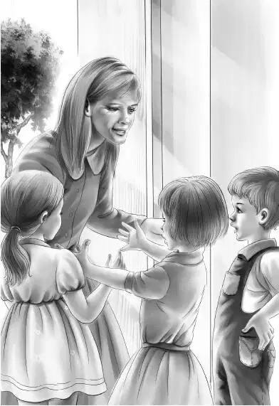

Chapter 15 The Last Song
弗莱的事情浮出水面后，伊丽莎白港沸腾起来！
大家都不敢相信，他们竟然被钱贩子给骗了。当卡特告诉大家，那些情人节的旧礼卡每张都值很多钱时，大家才开始相信了。
“总算可以大声说话了。”班尼说道，“这感觉真好。我可不喜欢偷偷摸摸地讲话，也不喜欢被人听壁角。现在总算可以想喊就喊啦！”
“很高兴咱们又见面了，卡特先生。”亨利说，“哦，不，应该是韦德先生才对。”
“亚当学院那边有什么消息吗，卡特？”爷爷问道。
“他们会把大部分硬币都买下来的。”卡特先生说，“我又找了两个收藏家，会把剩下的也买下来。我要挨家挨户地打电话，让村民们得到应有的补偿。”
“干得漂亮！”亨利说道。
“一天就能搞定。”卡特说着，脸上露出了微笑。
“那些小物件怎么办？”杰西问道。
“都会物归原主的。”卡特先生说，“过不了多久，就会有个很讲信用的古董商到岛上来，是卖掉还是留下它们，都由村民们说了算。”
“可弗莱先生还给了梅里一条红色的项链啊！”班尼缓缓地说道。
卡特先生笑了起来：“用不着担心，那项链只值25美分。”
这时，维莉猛地开口道：“要是那个古董商讲信用的话，格雷女士可以把书卖给他啊！反正那些书也没人读。”
“说得不错，维莉。”卡特先生说道，“她就是这么跟我交代的呢。她还说，自己怎么傻到以为有人会喜欢读那些古董书，她打算投资建一个图书馆，将彩色图画书、故事书和一些新书放进去，这样大人小孩都可以读了。”
“太棒啦！”杰西说道，“她真的变了呢！变得越来越亲切了！”
在岛上的最后一天，奥登兄妹原本打算跟学生们一起出去野餐，可是孩子们不同意——他们想要上课！

“我还从来没遇到过这样的学生呢！”维莉说道，“闻所未闻。”
当孩子们唱起最后一首歌的时候，有人从后门走了进来。孩子们不敢相信自己的眼睛，全都情不自禁地鼓起掌来。大家都知道她是谁，只不过以前只敢远远地凝望。
她就是——格雷女士。
“新老师上任之前，就由格雷女士来教大家。”亨利说道，“她会选出一个人，专门负责敲钟。”
“我们可不想说再见。”班尼说，“这种话最讨厌了。我向来就是要走就走，从不说再见。”
尽管每个人心里都很难过，孩子们还是没有告别就离开了。奥登先生坐在车里，等候在学校外面。格雷女士的房子正由园丁帮忙照看着。奥登兄妹上了车，学生们不停地挥着手，直到车子上了石子路，向奥登家的方向绝尘而去。
到家以后，班尼马上给迈克打了电话。
“你好呀，迈克！是我！”
“哦，你好啊班尼！你们又去探险了？这次是抓住了小偷还是找到宝藏了？”
“都让你说中了！”班尼说，“赶快骑车过来，我们给你讲讲小偷的故事！还有藏在旧袜子里的钱币！”
“别哄我了！”迈克说道，“那小岛那么无聊，根本发生不了这种事！”
“我可没哄你！”班尼说，“真是太刺激了，害得我都没法专心讲课了！”
“讲课？你不是在说胡话吧？”
“当然没有。”班尼说，“还不止这些呢，我们遇到了一位著名作家，还发现了两个天才画家！”
“我不信！”迈克嘴上这么说，心里其实一直很信班尼。
没过多久，迈克就将自行车停靠在奥登家门前的台阶上。奥登兄妹轮流跟他讲起了校舍里发生的神秘事件。
“真是太刺激了！”迈克听完，感慨道，“我在小岛待了两个暑假，什么事都没碰上！每天除了吃饭、钓鱼，就没别的可干了！对了，奥登先生，您不是说，这个暑假还要带他们去别的地方吗？”
“是的，迈克，我会的。”爷爷说着，眨了眨眼睛。
“剩下的时间不多了啊，先生！”
“足够了！还有整整一个八月份，九月份里还有几天呢！”奥登先生说。
“都足够到月亮上走一趟了呢！”班尼说。